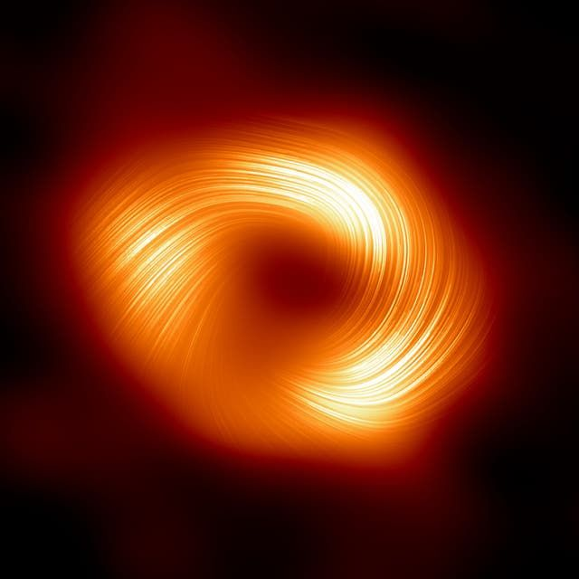
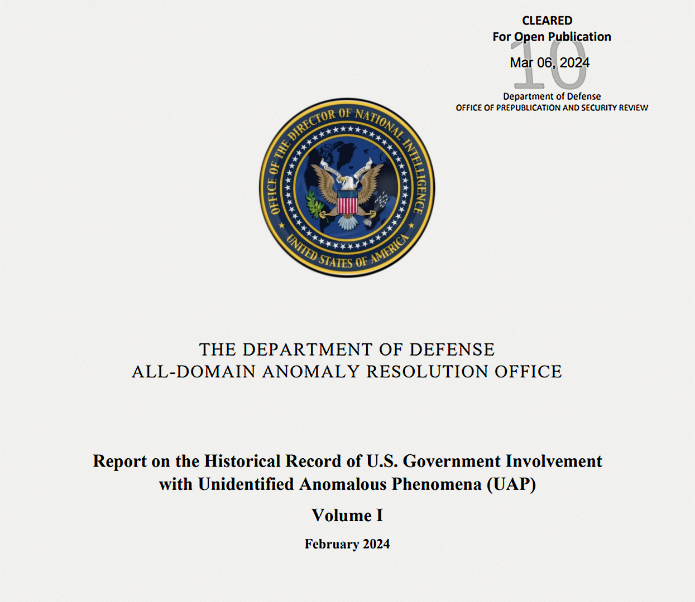

В нашем Telegram канале больше научных новостей, а также интересные обсуждения в комментариях, уважительная атмосфера общения.
7 Апреля 2024
6 Апреля 2024
Обе галактики находятся примерно в 160 миллионах световых лет от Земли, а их ядра отделены друг от друга расстоянием около 67 000 световых лет. Расстояние между галактиками в их ближайших друг от друга участках значительно меньше - примерно 40 000 световых лет. Хотя это расстояние кажется огромным, оно довольно мало.
Для сравнения - расстояние между Млечным Путем и его ближайшей независимой галактикой - Андромедой составляет около 2,5 миллионов световых лет. С другой стороны, расстояние между Млечным Путем и его галактикой-спутником - Большим Магеллановым облаком составляет около 162 000 световых лет.
5 Апреля 2024
Центр нашего Млечного Пути - странное и опасное место. Гравитационное притяжение Sgr A * заставляет звезды вращаться по своим орбитам с огромной скоростью. Общее количество звезд, сосредоточенных в центре галактики, превышает миллион. В центральной области — в пределах 0,3 световых лет от черной дыры немногие звезды остаются невредимыми.
Ближайшая к нашему солнцу звезда находится примерно в четырех световых годах от нас. На таком же расстоянии от сверхмассивной черной дыры находится более миллиона звезд. Это невероятно перенаселенный район. Сверхмассивная черная дыра обладает крайне сильным гравитационным притяжением. Вращаясь вокруг неё, звезды могут перемещаться со скоростью тысяч километров в секунду. И чем ближе звезды находятся к сверхмассивной черной дыре, тем их больше и соответственно выше вероятность столкновения.
Учёные разработали симуляцию, позволяющую проследить судьбы звездных популяций в центре нашей галактики. При моделировании учитывались несколько факторов: плотность звездного скопления, масса звезд, орбитальная скорость, гравитация и расстояния от Sgr A *.
Расчёты показали, что в пределах 0.03 световых лет от Sgr A * взаимные удары звёзд недостаточно сильны, чтобы уничтожить одну из них. Чаще всего они лишь сильно задевают друг друга, в результате чего звезды выбрасывают некоторое количество материала и теряют свои внешние слои. В результате они могут потерять довольно много вещества, что приводит к образованию популяции странных, урезанных звезд с малой массой.
За пределами 0,03 световых лет от Sgr A* звезды движутся с более спокойной скоростью — сотни километров в секунду вместо тысяч. Из-за более низких скоростей эти звезды сталкиваются друг с другом, но затем у них недостаточно энергии, чтобы разлететься друг от друга. Вместо этого они сливаются, становясь более массивными. В некоторых случаях они могут даже многократно сливаться, становясь массивнее на порядок от нашего Солнца. В результате столкновений и слияний эти звезды накапливают больше водорода. Хотя они образовались из более старой популяции, они маскируются под молодо выглядящие звезды. Но молодой внешний вид достигается за счет более короткой продолжительности жизни. В них много водорода, но сжигают его они очень быстро.
Звезды, находящиеся под влиянием сверхмассивной черной дыры в этом очень густо населенном регионе, не похожи ни на что, из того что мы когда-либо увидим в окрестностях нашей собственной солнечной системы. Но если мы сможем узнать больше об этих звездных популяциях, то, возможно, узнаем что-то новое о том, как образовался центр нашей галактики.
4 Апреля 2024

Группа учёных, координируемая Хельсинкским университетом, смогла измерить всплеск концентрации радиоуглерода в деревьях Лапландии, который произошел после вспышки в Кэррингтоне.
Более слабые солнечные бури, и более распространенные чем буря Кэррингтона, в настоящее время можно изучать с помощью измерительных приборов и спутников, а прошлые - более крупные можно исследовать, например, путем измерения концентрации радиоуглерода в годичных кольцах.
До сих пор не удавалось изучить средние бури, такие как событие Кэррингтона, которые происходили в прошлом, с помощью традиционных радиоуглеродных методов. Новое исследование открывает потенциально новый способ изучения частоты подобных бурь, что может помочь лучше подготовиться к будущим угрозам.
Результаты были интерпретированы с использованием численной модели производства и транспорта радиоуглерода. Модель динамического атмосферного переноса углерода была специально разработана для описания географических различий в распределении радиоуглерода в атмосфере.
Что было важным в недавно опубликованном исследовании, так это то, как содержание радиоуглерода в деревьях Лапландии отличается от содержания радиоуглерода в деревьях в более низких широтах. Первые измерения были проведены в Ускорительной лаборатории Хельсинкского университета, а повторные измерения, проведенные в двух других лабораториях, значительно уменьшили предыдущие неопределенности.
Это открытие может помочь лучше понять динамику атмосферы и углеродный цикл тех времен, когда они еще не были связаны с антропогенными выбросами ископаемого топлива, что позволит разработать более подробные модели углеродного цикла.
Возможно, избыток радиоуглерода, вызванный солнечной вспышкой, в первую очередь был перенесен в нижние слои атмосферы через северные регионы, вопреки общему пониманию его движения. Также возможно, что циклические изменения в производстве радиоуглерода в верхних слоях атмосферы, вызванные изменениями солнечной активности, привели к локальным различиям на уровне земли.
Однако, преобладающая часть радиоуглерода производится галактическими космическими лучами, приходящим из-за пределов Солнечной системы, хотя исключительно сильные солнечные бури генерируют отдельные всплески изотопа углерода в атмосфере. Космические лучи, в свою очередь, ослабляются солнечным ветром — непрерывным потоком частиц, исходящих от Солнца, количество которых колеблется в 11-летних циклах.
Тема требует дальнейшего исследования. Исторические записи показывают, что значительные геомагнитные бури также имели место в 1730 и 1770 годах, поэтому их отслеживание, вероятно, будет в центре внимания в ближайшее время.
Исследование проводилось в рамках совместного проекта Лаборатории хронологии и физического факультета Хельсинкского университета, а также Института природных ресурсов Финляндии. В исследовании также приняли участие исследователи из Университета Оулу, Университета Нагои, Университета Ямагата и ETH Цюриха.
3 Апреля 2024

После двух десятилетий работы ученые и инженеры празднуют завершение работы над камерой Legacy Survey of Space and Time (LSST).
Эти данные помогут в обнаружении и понимании тёмной энергии, которая является движущей силой ускоряющегося расширения Вселенной, и в поисках, пока необнаруженного, тёмного вещества, составляющего около 85% материи во Вселенной. Учёные также планируют использовать данные обсерватории, чтобы лучше понять нашу собственную галактику - Млечный Путь и нашу собственную солнечную систему.
Камера размером примерно с небольшой автомобиль весит около 3 тонн, а её главная линза имеет более полутора метров в поперечнике. Это самый большой за всю историю человечества объектив из созданных для таких целей.
2 Апреля 2024


Как появляются планеты-изгои и сколько их может быть.
Такие планеты чрезвычайно трудно обнаружить, но астрономия совершенствуется и учёные получают всё более совершенные инструменты для решения этой задачи. Только в 2021 году астрономы обнаружили 70 таких планет.
Для тех которые формируются вокруг звезд, и в конечном итоге выбрасываются из звёздных систем, существуют различные механизмы выброса. Они могут быть выброшены в результате взаимодействия со своими звёздами в двойной звездной системе, или они могут быть выброшены в результате гравитационного взаимодействия с другими планетами.
Гэвин Коулман с факультета физики и астрономии Лондонского университета королевы Марии создал компьютерную симуляцию этих процессов.
В его модели менялись несколько параметров: начальная масса протозвёздного диска, разделение его на двойные системы, сила внешней среды и уровень турбулентности в диске. Эти параметры сильно влияют на формирование планет. А также учитывалась масса звёзд, их массовое сотношение друг к другу и двойной эксцентриситет.
Время в симуляциях длилось 10 миллионов лет - достаточно долго для того, чтобы солнечная система сформировалась. Оказалось, что каждая двойная система выбрасывает в среднем от двух до семи планет массой больше Земли. Для планет-гигантов, более 100 масс Земли, количество выброшенных планет уменьшается до 0,6 выброшенных планет на систему.
Моделирование также показало, что большинство планет выбрасывается из своих околозвездных дисков через 0,4-4 миллиона лет после начала формирования системы. В этом возрасте околосолнечный диск еще бы даже не рассеялся и не был бы унесён солнечным ветром.
Пока у астрономов нет чёткого представления о том, сколько подобных планет существует. Некоторые исследователи считают, что их могут быть триллионы в нашей галактике. Будущий космический телескоп Nancy Grace Roman будет использовать гравитационное линзирование для обнаружения подобных планет, масса которых стартует от массы Марса.
1 Апреля 2024
Термоядерные взрывы на нейтронных звёздах усиливают их джеты.
Когда накапливается достаточное количество материала, это вызывает термоядерный взрыв. Происходит неконтролируемая реакция ядерного синтеза, которая быстро распространяется по всей поверхности звезды. Это длится от нескольких секунд до минут, вызывая мощную вспышку рентгеновского излучения.
Долгое время учёные думали, что этот термоядерный взрыв разрушает джеты нейтронных звёзд. Затем они использовали австралийский радиотелескоп CSIRO, чтобы в течение трех дней наблюдать за джетами и зафиксировать их разрушение. В то же время они использовали рентгеновский телескоп Integral Европейского космического агентства, чтобы сравнить радио наблюдения с наблюдениями в рентгеновском диапазоне.
К своёму удивлению, они обнаружили, что джеты становились только ярче при каждом импульсе рентгеновского излучения. Вместо того, чтобы разрушать струи - термоядерные взрывы усиливали их. И такое повторялось десять раз в одной системе с нейтронной звездой, а затем аналогично во второй схожей системе.
Скорость вещества в джетах, которую измерили учёные, была близка к второй космической скорости для нейтронных звёзд. Для Земли эта скорость составляет 11,2 километра в секунду — именно такой скорости должны достичь ракеты, чтобы вырваться из оков земного притяжения. Для нейтронной звезды это значение составляет около половины скорости света.
Кроме того, в этой инновационной работе был представлен новый метод измерения скорости джетов нейтронных звёзд. Следующим шагом предлагаются наблюдения за изменением скорости джетов нейтронных звёзд в зависимости от их массы и скорости вращения. Это позволит напрямую проверить теоретические модели, приблизив науку к пониманию того, как запускаются такие мощные космические струи.
30 Марта 2024
Команда марсохода ищет доказательства, подтверждающие то, как канал был прорезан в этой скале. Рельеф настолько глубок, что команда не думает о выветривании. Однако селевые потоки или реки, несущие камни и прочие отложения, могли иметь достаточно энергии, чтобы прорезать коренную породу. После того как канал образовался, его завалило валунами и другим мусором. Учёные хотят узнать - был ли этот материал перенесен селями или сухими лавинами.
29 Марта 2024
28 Марта 2024

Астрономы обнаружили мощные магнитные поля у сверхмассивной чёрной дыры в центре нашей галактики.
Изображение сверхмассивной чёрной дыры - Стрелец А* (Sgr A*), впервые полученное в поляризованном свете, выявило структуру магнитного поля, поразительно похожую на структуру магнитного поля чёрной дыры в центре галактики M87, что позволяет предположить, что сильные магнитные поля могут быть у всех сверхмассивных чёрных дыр. Такое сходство с M87 также указывает на наличие пока необнаруженного джета у Стрельца А*. Астрономы обнаружили мощные магнитные поля у сверхмассивной чёрной дыры в центре нашей галактики.
Частицы в плазме аккреционного диска, вращающиеся вокруг силовых линий магнитного поля, создают картину поляризации перпендикулярную полю. Это позволило астрономам составить карту линий магнитного поля.
Запланированные на следующее десятилетие наблюдения позволят астрономам получить высококачественное видео Стрельца А*, помогут обнаружить джет и позволят наблюдать аналогичные особенности поляризации в других чёрных дырах, а также дадут более четкие изображения чёрных дыр за всю историю астрономии.
27 Марта 2024
Наблюдения и расчёты показали, что чёрная дыра промежуточной массы периодически пробивает аккреционный диск сверхмассивной чёрной дыры.
В течение этого времени учёные ежедневно и с высокой частотой проводили измерения рентгеновского излучения галактики. Когда они внимательно изучили данные, то заметили любопытную закономерность в четырехмесячной вспышке: узкие провалы в очень узком диапазоне рентгеновских лучей, которые, как оказалось, появлялись каждые 8,5 дней.
Теоретически в ближайших окрестностях центральной сверхмассивной черной дыры этой галактики может быть вторая, гораздо меньшая по размеру чёрная дыра. Эта меньшая черная дыра может вращаться под углом к аккреционному диску своего более крупного компаньона.
Учёные предположили, что вторая чёрная дыра периодически пробивает аккреционный диск первой сверхмассивной чёрной дыры во время обращения вокруг неё. При этом она выталкивает шлейф газа, как пчела, летящая сквозь облако пыльцы.
Когда этот шлейф оказывается направлен в сторону телескопа, тот обнаруживает провал в общей энергии галактики, время от времени ненадолго снижающий свет от её диска.
Несколько команд ученых объединились, чтобы проверить эту идею с помощью моделирования, включающего наблюдения за первоначальным всплеском и регулярными 8,5-дневными провалами. То, что они обнаружили, подтверждает теорию: наблюдаемая вспышка, вероятно, является результатом воздействия второй - меньшей черной дыры, вращающейся вокруг центральной сверхмассивной черной дыры и периодически прокалывающей ее диск.
Команда провела многочисленные симуляции для проверки периодических провалов. Наиболее вероятным объяснением, заключают они, является новый вид системы: Давида и Голиафа — чёрная дыра промежуточной массы, вращающаяся вокруг сверхмассивной черной дыры.
Этот результат показывает, что сверхмассивные черные дыры в паре с дырами промежуточной массы могут быть обычным явлением в ядрах галактик, что является очень интересным направлением наблюдений для будущих детекторов гравитационных волн.
26 Марта 2024
Любой, кто использовал микроскоп на уроках биологии для изучения растительной клетки, вероятно, сможет вспомнить подобную ситуацию. Над ядром и справа от него расположен хлоропласт. Но находятся ли они оба в одной плоскости? Отрегулировав фокус микроскопа, вы увидите, что изображение ядра становится более четким, а изображение хлоропласта размывается. Однако этот метод не может дать нам точных сведений об их вертикальном положении.
Принцип аналогичен, если вы хотите наблюдать отдельные атомы, а не клетки. Для этой цели можно использовать квантовую газовую микроскопию. Это позволяет напрямую определить координаты x и y атома. Однако гораздо труднее измерить его координату z. Чтобы узнать, в какой плоскости расположен атом, необходимо получить несколько изображений, на которых фокус смещен по вертикали. Это сложный и трудоемкий процесс.
Для этого атомы сначала необходимо значительно охладить, чтобы они почти не колебались. После этого их нужно поймать в ловушку стоячей волной света лазера. Затем атомы попадают во впадины волны - подобно тому - как яйца ложатся в кассету для яиц. Попав в такую ловушку они подвергаются воздействию дополнительного лазерного луча, который стимулирует уже их самих излучать свет. А возникающая в результате флуоресценция проявляется в квантовом газовом микроскопе как слегка размытое круглое пятнышко.
Теперь учёные разработали специальный метод деформации волнового фронта света излучаемого атомами. В нём вместо типичных круглых пятен деформированный волновой фронт создает на камере форму гантели, которая вращается вокруг себя. Направление, в котором указывает эта гантель, зависит от расстояния которое свет должен был пройти от атома до камеры. Таким образом, гантель действует как стрелка компаса, позволяя считывать координату Z в соответствии с её ориентацией в трёхмерном пространстве.
Данный метод может быть использован для разработки новых квантовых материалов с особыми характеристиками. Например, учёные могли бы исследовать - какие квантово-механические эффекты возникают, когда атомы расположены в определенном пространственном порядке. Это позволит им моделировать свойства трёхмерных материалов без необходимости их синтеза.
25 Марта 2024
Неопознанный летающий объект, переполошивший полстраны, опознали.
Вечером 25 марта в небе над Хабаровском и Владивостоком очевидцы наблюдали неопознанный летающий объект — яркая полоса прочертила небо над городами. Его сняли очень много людей. Видео с самых разных ракурсов разлетелись по сети с самыми разнообразными комментариями.
«С высокой вероятностью это вход и разрушение в атмосфере космического мусора, т.е. спутника или ступени ракеты», — говорит Владимир Сурдин, астроном, старший научный сотрудник Государственного астрономического института имени П. К. Штернберга, доцент физического факультета МГУ.
С ним согласны руководители крупнейшего российского сообщества любителей наблюдательной астрономии AstroAlert:
«Вечером 25 марта 2024 года над Дальним Востоком России наблюдался полет яркого горящего объекта на фоне ясного неба. По сообщению специалистов из ISON (Научная сеть оптических инструментов астрометрических и фотометрических наблюдений — российский проект по наблюдению за космическим пространством), причиной этого явления стало неконтролируемое вхождение в плотные слои атмосферы третьей ступени (блока И) ракеты космического назначения "Союз-2.1а", выводившей 23 марта пилотируемый корабль "Союз МС-25"».
Сообщает телеканал «Наука».
24 Марта 2024
Новое исследование подтверждает, что такие системы крайне редки среди маломассивных и уже остывших коричневых карликов, хотя двойные коричневые карлики часто наблюдаются в более молодом, горячем возрасте. Это говорит о том, что такие системы распадаются с течением времени. Отсутствие двойных систем старых коричневых карликов позволяет предположить, что некоторые из них, возможно, начинали как двойные, но со временем разошлись.
Новые результаты наблюдений при помощи Хаббла, опубликованные в «Ежемесячных уведомлениях Королевского астрономического общества», еще раз подтверждают теорию о том, что коричневые карлики рождаются так же, как звезды - в результате гравитационного коллапса облака молекулярного водорода. Разница в том, что у них нет достаточной массы для поддержания ядерного синтеза лёгкого водорода, в отличие от нормальных звезд. Более половины звезд в нашей галактике имеют звезду-компаньона, образовавшуюся в результате этих процессов формирования из молекулярного облака. И более массивные звезды чаще встречаются именно в двойных системах.
Команда учёных выбрала для наблюдения самых холодных, самых маломассивных и старых коричневых карликов в окрестностях Солнца. Эти старые коричневые карлики настолько холодны, что в большинстве случаев лишь на несколько сотен градусов теплее чем Юпитер. В результате их атмосфера содержит конденсирующийся водяной пар. Учёные использовали два разных фильтра ближнего инфракрасного диапазона: один, в котором холодные коричневые карлики выглядят яркими, а другой - охватывающий определенные длины волн, где они наблюдаются очень тусклыми из-за поглощения воды в их атмосферах.
Новое исследование выдвигает прямые доказательства того, что двойные системы коричневых карликов, образовавшиеся когда они молоды, вряд ли доживут вместе до старости, они, скорее всего, будут разделены. Поскольку коричневые карлики настолько легкие, что гравитационное притяжение, связывающее не слишком близко расположенные двойные пары, очень слабо, и проходящие мимо звезды могут легко оторвать их друг от друга, и либо отправить их в одиночное плавание по просторам космоса, либо сделать их частью собственной системы.
Космический корабль - НАСА Europa Clipper, старт которого запланирован на октябрь этого года, будет оснащён дополнительными инструментами для еще более детального изучения покрытого льдами спутника Юпитера - Европы.
Ученые использовали экспериментальную установку, которая испускает крайне тонкую струю воды в вакуум, где она распадается на капли и замерзает. Затем они использовали лазерный луч и масс-спектральный анализатор для имитации того, что смогут обнаружить инструменты космического аппарата. Результаты эксперимента показали, что инструменты, предназначенные для будущих миссий могут обнаруживать клеточный материал даже в одной из сотен тысяч ледяных гранул.
В эксперименте использовалась Sphingopyxis alaskensis - бактерия распространённая в водах Аляски. Этот одноклеточный организм живет в холодной среде и может выжить при небольшом количестве питательных веществ. Эти бактерии чрезвычайно малы, поэтому теоретически способны помещаться в ледяные зерна, которые выбрасываются из подлёдного океана Энцелада или Европы. Результаты эксперимента показали, что эти инструменты могут обнаружить бактерию или ее фрагменты даже в одной крошечной частице льда.
22 Марта 2024
20 Марта 2024
Звездная система — T Coronae Borealis состоит из близко расположенных друг от друга белого карлика и красного гиганта, которые создают идеальные условия для вспышки Новой звезды. Белый карлик постепенно поглощает атмосферу расширяющегося красного гиганта. От этого он становится горячее, больше и ярче, и в результате происходит колоссальный термоядерный взрыв. Весь этот процесс является частью естественного жизненного цикла этих звезд, который длится 80 лет. После карлик снова начинает отбирать вещество у красного гиганта, накапливая его с той же скоростью - до момента ещё одной вспышки. T Coronae Borealis, или сокращёенно - T CrB, в последний раз взорвалась в 1946 году, и астрономы полагают, что это произойдет снова в период с февраля по сентябрь 2024 года.
19 Марта 2024
Изучение этих редких активных астероидов помогает ученым разобраться с формированием и эволюцией Солнечной системы, включая происхождение воды на Земле. Эти объекты также могут помочь в будущих исследованиях космоса, поскольку вода и углекислый газ, из которых в основном состоят эти льды образующие кометные хвосты, являются веществом этих астероидов, и эти вещества могут послужить материалом для ракетного топлива, и обеспечить воздух, пригодный для дыхания будущих исследователей космоса.
Проект «Активные астероиды» был основан доктором Колином Орионом Чендлером, из Вашингтонского университета. Чтобы присоединиться к проекту и помочь обнаружить следующий активный астероид, посетите activeasteroids.net.
18 Марта 2024
У хитонов глаза не похожи на органы зрения ни одного другого существа из животного мира нашей планеты.
Что касается того, как эти структуры передают визуальную информацию мозгу - это предмет текущих исследований. Однако, из недавнего исследования становится ясно, что, по крайней мере, у одного вида хитонов более сложные глаза посылают визуальную информацию для обработки в кольцеобразную нервную структуру, которая окружает все их тело. Зрительные нервы, подключенные к этому кольцу, затем определяют местоположение объекта в зависимости от того, какие части кольца активируются.
17 Марта 2024
Временно названный вулканом Ноктис, в ожидании официального названия, он расположен на координатах 7°35’ ю.ш., 93°55’ з.д.. Вулкан достигает 9022 метров в высоту и имеет ширину 450 километров. Гигантские размеры вулкана и сложная история изменений указывают на то, что он был активен в течение очень долгого времени. В его юго-восточной части расположены недавние вулканические отложения, под которыми, вероятно, все еще присутствует ледниковый лед.
Помимо открытия вулкана сообщается об открытии большой площади вулканических отложений площадью 5000 квадратных километров по периметру вулкана, представляющих собой большое количество низких, округлых и удлиненных холмов. Эта вздутая местность интерпретируется как поле «конусов без корней» - насыпей образовавшихся в результате взрывного выхода пара и набухания ледниковых пород.
Учёные интерпретируют вулкан как огромный щит, состоящий из слоистых скоплений пирокластических материалов, лавы и льда, который возник в результате неоднократного накопления снега и ледников на его склонах с течением времени. По мере развития разломов, лава поднималась через различные части вулкана, что привело к термической эрозии и удалению огромного количества погребенного льда, и катастрофическое обрушение целых участков вулкана. Последующие оледенения продолжили эрозию, придав многим каньонам внутри структуры их нынешнюю характерную форму.
Реликтовый ледник и возможный погребенный слой ледникового льда вокруг него могут быть остатками последнего эпизода оледенения, повлиявшего на вулкан. Неизвестно - является ли он все еще вулканически активным и может ли извергнуться снова. И если он был активен в течение очень долгого времени - могло ли сочетание устойчивого тепла и воды из этого льда позволить этому месту стать убежищем для жизни.
Присутствие льда на небольших глубинах вблизи экватора означает, что люди потенциально могут исследовать эту часть планеты, сохраняя при этом возможность добывать воду, что делает вулкан Ноктис исключительно интересным.
Поиски корабля - «Сан-Хосе» и его сокровищ, затонувших на глубине 600 метров, теперь стали возможными благодаря достижениям в области технологий подводных аппаратов с дистанционным управлением. Корабль сейчас поднимают со дна моря.
Корабль затонул нагруженный сокровищами, в том числе 11 миллионами золотых, 200 тоннами серебра, изумрудами и другими ценными грузами во время битвы при Бару, являвшейся частью войны за испанское наследство. Эта война велась между Испанией и Францией с одной стороны и Великобританией, Священной Римской империей, Голландской республикой и другими европейскими союзниками с другой.
Корабль представлял собой 64-пушечный трехмачтовый галеон Испанской Армады. Документы о судне сохранились в архивах Casa de Contratación de las Indias - Торговый дом Индии, Национальных архивах Испании и Лимы, а также в архивах испанских верфей и судостроения.
Предполагается, что стоимость ценностей, которые сейчас возможно поднять, оценивается в 20 миллиардов долларов.
15 Марта 2024
В результате столкновения нейтронных звезд они разбрызгивают вещество, богатое свободными нейтронами. Эти нейтроны могут быть поглощены атомными ядрами в процессе быстрого захвата или « r-процесса. Что приводит к созданию нестабильных массивных атомных ядер, которые в конечном итоге распадаются с образованием более легких элементов, таких, как, например, золото. Этот распад также производит мощное излучение, которое астрономы видят как Килоновую. В результате слияния также образуется недолговечный плотный остаток двух нейтронных звезд, который, чаще всего, быстро коллапсирует, порождая чёрную дыру.
Остаток примерно на секунду становится гораздо горячее чем любые звезды прежде чем превратиться в более крупную нейтронную звезду или черную дыру, в зависимости от начальной массы. Дев считает, что этот остаток является идеальной фабрикой для производства экзотических частиц, таких как, например, аксионы.
Эти частицы могут покинуть место слияния нейтронных звёзд и распасться на другие частицы. Дев и его коллеги считают, что распад этих частиц порождает уникальный электромагнитный сигнал, который можно уловить гамма-телескопами, например космическим телескопом НАСА - Ферми. А Ферми и иные инструменты для обнаружения гамма-лучей смогут сосредоточиться на столкновениях нейтронных звезд для сбора данных, которые могут улучшить понимание учёными аксионов и подобных им частиц.
В конечном итоге это может привести к открытию частиц составляющих темную материю и решению одного из самых актуальных вопросов космологии - из чего состоит недостающая материя Вселенной?
В настоящее время ученые используют секвенирование отдельных генов для идентификации земных микроорганизмов на основе их ДНК. Однако современные методы не позволяют различить близкородственные виды экстремофилов. Ральф Мёллер из отделения радиационной биологии, Институт аэрокосмической медицины, Немецкий аэрокосмический центр, Кёльн, Германия и его коллеги проверили - смогут ли они идентифицировать экстремофилов, используя лишь их белковую сигнатуру, а не последовательность генов. Они начали свои исследования с образцов воды из пяти высокогорных андских озер в чилийском Альтиплано. Из этих образцов учёные культивировали 66 микробов, а затем проверили - какой из методов лучше идентифицирует микроорганизмы.
Традиционное секвенирование генов сравнивало нуклеотиды гена 16s рРНК с базой данных для идентификации. Новый метод «протеотипирования» анализировал фрагменты белков, известных как пептиды, для создания пептидных сигнатур, которые группа учёных использовала для идентификации микроорганизмов из баз данных протеомов.
С помощью этого метода они идентифицировали 63 из 66 микроорганизмов, выращенных в образцах высокогорного озера. Для трех микроорганизмов, которые не удалось идентифицировать с помощью секвенирования генов, поскольку их генетическая информация отсутствовала в доступной базе данных, протеотипирование выявило два потенциально новых типа экстремофильных бактерий.
Эти результаты позволяют предположить, что протеотипирование может быть более полным решением для идентификации экстремофильных микроорганизмов из небольших биологических образцов. Учёные говорят, что профилирование белков может когда-нибудь помочь нам найти и идентифицировать внеземную жизнь и лучше исследовать биоразнообразие на нашей планете.
14 Марта 2024

Ученые впервые исследовали нетрадиционный сверхтемпературный сверхпроводник, который встречается в природе в минеральной форме.
По словам Руслана Прозорова, ученого из Ames Lab - национальная лаборатория Министерства энергетики США, расположенная в Эймсе, штат Айова, все подобные материалы выращены в лаборатории. Этот факт привел к всеобщему убеждению, что нетрадиционная сверхпроводимость не является естественным явлением.
Прозоров объяснил, что найти сверхпроводники в природе сложно, поскольку большинство сверхпроводящих элементов и соединений являются металлами и имеют тенденцию вступать в реакцию с другими элементами, например с кислородом. Он сказал, что миассит представляет собой интересный минерал по нескольким причинам, одной из которых является его сложная химическая формула. "Интуитивно думаешь, что это нечто, что создается намеренно в ходе целенаправленного поиска, и что оно не может существовать в природе, - сказал Прозоров. - Но оказывается, что оно существует". Он был обнаружен у реки Миасс в Челябинской области России.
Ранее выращивание кристаллов миассита было частью масштабных усилий по открытию соединений, сочетающих в себе редкие и очень тугоплавкие элементы, например Родий.
«Это все равно, что найти скрытую рыболовную яму, полную большой жирной рыбы. В системе Rh-S мы обнаружили три новых сверхпроводника. И благодаря детальным измерениям Руслана мы обнаружили, что миассит является нетрадиционным сверхпроводником», - сказал Пол Кэнфилд, заслуженный профессор физики и астрономии Университета штата Айова и ученый из лаборатории Эймса.
Обычные сверхпроводники хорошо изучены, но имеют низкие критические температуры. Критическая температура — это самая высокая температура, при которой материал действует как сверхпроводник.
В 1980-х годах ученые открыли нетрадиционные сверхпроводники, многие из которых имеют гораздо более высокие критические температуры. По словам Руслана Прозорова - все эти материалы выращены в лаборатории. Этот факт привел к всеобщему убеждению, что нетрадиционная сверхпроводимость не является естественным явлением. Однако ученые ошибались они существуют в природе.
Стрим запуска Starship с участием Владимира Сурдина и Алексея Семихатова.
Старт прошел успешно — все 33 двигателя ракеты-носителя отработали штатно и вывели Starship на запланированную высоту в заданной точке, где корабль отделился от носителя и направился в космос. Саму первую ступень мягко посадить на воду в этот раз не удалось — Super Heavy при посадке развил слишком большую скорость и ударился о воду.
В полете самого корабля инженеры SpaceX провели несколько технических испытаний, в частности открыли люк, чтобы проверить возможность в будущем выводить через него спутники.
Инженеры также сумели перекачать топливо из одного бака в другой. Пока эта процедура происходит внутри корабля, но в SpaceX считают это первым тестом возможной дозаправки кораблей на орбите.
Последний запланированный тест — повторное включение двигателя, чтобы направить корабль к месту падения в Индийском океане, не состоялся, поскольку Starship и так сошел с орбиты в нужной точке. Но скорость схода с орбиты была слишком велика, в результате чего корабль вошел в плотные слои атмосферы слишком быстро, перегрелся и развалился. Все фрагменты упали примерно в заданную точку.
12 Марта 2024

Новые детальные изображения помогают понять почему рост галактик в ранней Вселенной был намного быстрее, чем считалось ранее.
Международная исследовательская группа недавно провела беспрецедентно подробные наблюдения одной из самых ранних галактик - Gz9p3. Учёные обнаружили, что Gz9p3 оказалась гораздо более массивной и зрелой, чем ожидалось для такой ранней Вселенной. Это, безусловно, самый массивный объект, подтвержденный за это время. По расчетам, он в 10 раз массивнее, чем любая другая галактика, обнаруженная в том возрасте Вселенной. В ходе наблюдений выяснилось, что Gz9p3 не только огромна, но и её сложная форма сразу идентифицирует её не как отдельную галактику, а как одно из самых ранних слияний нескольких галактик из когда-либо ранее наблюдавшихся. Затем астрономы смогли заглянуть глубже, чтобы описать популяцию звезд, составляющих эти сливающиеся галактики. Используя JWST, они смогли изучить их спектр.
Большинство ранних исследований этих очень далеких объектов показывало только очень молодые звезды, потому что более молодые звезды ярче и поэтому их свет доминирует в данных полученных изображений. Например, молодая яркая популяция, возникшая в результате слияния галактик возрастом менее нескольких миллионов лет затмевает старую популяцию, возраст которой уже превышает 100 миллионов лет. Используя технику спектроскопии ученые смогли провести настолько подробные наблюдения, что стало можно различить две популяции. Конкретные элементы, обнаруженные в спектре (включая кремний, углерод и железо), показывают, что вторая более древняя популяция должна была существовать, чтобы обогатить галактику множеством химических веществ.
Удивляет не только размер галактик, но и скорость, с которой они достигли такого химически зрелого состояния. Эти наблюдения предоставляют доказательства быстрого и эффективного образования звезд и металлов связанного с продолжающимися слияниями галактик, демонстрируя, что массивные галактики с несколькими миллиардами звезд существовали раньше, чем ожидалось.
Изолированные галактики создают свою популяцию звезд из своих ограниченных резервуаров газа, однако для галактик это путь к медленному росту. Взаимодействия между галактиками могут привлекать новые притоки газа и пыли, обеспечивая топливо для быстрого звездообразования, а слияния обеспечивают еще более быструю возможность для накопления и роста массы. Все крупнейшие галактики в нашей современной Вселенной имеют историю слияний, включая наш Млечный Путь, который вырос до своих нынешних размеров в результате последовательных слияний с меньшими галактиками. Эти наблюдения Gz9p3 показывают, что галактики могли быстро накапливать массу в ранней Вселенной посредством слияний, причем эффективность звездообразования была выше, чем ожидали учёные.
Это и другие наблюдения с использованием JWST заставляют астрофизиков скорректировать свои модели ранних лет существования Вселенной. Эти новые результаты являются своевременными, поскольку мы приближаемся к двухлетней отметке научных наблюдений, проводимых с использованием JWST. По мере того как общее количество наблюдаемых галактик растет, астрономы, изучающие раннюю Вселенную, переходят от фазы открытия к периоду, когда у нас будут достаточно большие выборки, чтобы начать строить и совершенствовать новые модели. Никогда еще не было более захватывающего времени для разгадки тайн ранней Вселенной.
11 Марта 2024
10 Марта 2024

Если бы NGC 4423 рассматривалась не в профиль, то она напоминала бы форму, которую мы больше всего ассоциируем со спиральными галактиками: эффектные изогнутые рукава, исходящие из яркого центра, перемежающиеся с более тусклыми и менее населенными областями. Но при наблюдении за небом мы ограничены относительным расположением Земли и объектов, которые мы наблюдаем.
Эта галактика была открыта ещё в 1784 году английским астрономом Уильямом Гершелем с помощью оптического телескопа диаметром 47,5 см.


9 Марта 2024

США подтвердили наблюдения инопланетных кораблей, они производили реверс-инжиниринг внеземных технологий?
В 63-страничном докладе Пентагона говорится - «нет». Отчет был подготовлен конгрессу США, который требовал предоставления законодателям письменного отчета с подробным описанием исторических данных касающихся неопознанных аномальных явлений от правительства Соединенных Штатов.США подтвердили наблюдения инопланетных кораблей, они производили реверс-инжиниринг внеземных технологий?
«Все следственные усилия на всех уровнях квалификации пришли к выводу, что большинство наблюдений были обычными объектами и явлениями, и результатом неправильной идентификации», говорится в отчете.
«Не было найдено никаких эмпирических доказательств утверждений о том, что правительство США и частные компании занимаются реверс-инжинирингом внеземных технологий. Неточные заявления о реверс-инжиниринге в значительной степени являются результатом циклических сообщений от группы людей, которые считают, что это так, несмотря на отсутствие каких-либо доказательств».
Расследование Александра Соколова дела 3200-летней давности о настоящем отморозке из древнего Египта.
Познакомьтесь: древнеегипетский плохой парень. Возможно, даже, древнейший плохой парень в истории. Взяточник, вор, насильник и убийца. И одновременно один из самых известных древних египтян нецарской и незнатной крови. 3200 лет назад бригадир по имени Панеб был настоящим отморозком.
Александр Соколов - научный журналист, редактор АНТРОПОГЕНЕЗ.РУ, автор книг: «Мифы об эволюции человека», «Ученые скрывают» и «Странная обезьяна».
Взгляд на кипящую поверхность Бетельгейзе.
Быстрое вращение не вызывало бы удивления, если бы Бетельгейзе была бы близка к идеально круглой сфере. Однако поверхность Бетельгейзе представляет собой динамичный мир, управляемый конвекцией. Мы можем наблюдать конвекцию в нашей повседневной жизни, когда кипятим воду, но у Бетельгейзе этот процесс гораздо более мощный: пузырьки кипения могут достигать размеров орбиты Земли вокруг Солнца и покрывать большую часть поверхности Бетельгейзе. Они поднимаются и опускаются со скоростью до 30 км/с. Скопление кипящих пузырей поднимается с одной стороны звезды, а другая группа пузырей опускается с другой стороны. Из-за ограниченного разрешения телескопов такие конвективные движения будут размыты в реальных наблюдениях, что создает иллюзию быстрого вращения.
8 Марта 2024

Существующая энергетическая политика Китая требует, чтобы электростанции, работающие на возобновляемых источниках энергии, имели возможность хранения от 20% своей номинальной генерируемой мощности в течение как минимум двух-четырех часов. Energy Vault утверждает, что продолжительность хранения энергии со временем будет увеличиваться, поскольку в скором времени доля возобновляемой энергии будет составлять большую часть электроэнергии в национальной сети Китая.
7 Марта 2024
В стратосфере газообразный диоксид серы из вулканов подвергается химическим реакциям, конденсируясь в последствии в жидкие аэрозольные частицы. Эти частицы могут влиять на температуру поверхности Земли двумя противоположными способами: отражая входящий солнечный свет или улавливая исходящую от поверхности тепловую энергию, что приводит напротив к эффекту парникового потепления.
Ученые рассчитали - в какой степени диаметр частиц вулканического аэрозоля влияет на температуру после извержения. Чем меньше и плотнее частицы, тем выше их способность блокировать солнечный свет. Но оценить размер частиц крайне сложно, поскольку предыдущие суперизвержения не оставили надежных физических свидетельств. В атмосфере размер частиц меняется по мере их коагуляции и конденсации. Даже когда частицы падают обратно на Землю они не оставляют четкого физического следа из-за смешивания с наземной средой и уплотнения.
Моделируя суперизвержения с использованием различных размеров частиц, исследователи обнаружили, что суперизвержения могут быть неспособны изменить глобальную температуру значительно больше, чем крупнейшие извержения современности. Например, извержение горы Пинатубо на Филиппинах в 1991 году привело к падению глобальной температуры примерно на полградуса в течение двух лет.
Чтобы квалифицироваться как суперизвержение вулкан должен выпустить более 1000 кубических километров магмы. Такие извержения чрезвычайно редки. Последнее подобное суперизвержение произошло более 22 000 лет назад в Новой Зеландии. Самым известным примером может быть извержение Йеллоустонского супервулкана около 2 миллионов лет назад.

5 Марта 2024
Команда ученых также обнаружила признаки присутствия ионизированных химических элементов, которые обычно наблюдаются вблизи аккрецирующих сверхмассивных черных дыр. Кроме того, они обнаружили, что галактика испускает очень мощный галактический ветер. Такие высокоскоростные ветры обычно вызываются процессами связанными с энергичной аккрецией сверхмассивных черных дыр.
Полученные данные показали, что GN-z11 содержит сверхмассивную черную дыру массой два миллиона солнечных масс, находящуюся в очень активной фазе поглощения материи. В результате чего она такая яркая.
Вторая группа ученых использовала инструмент - NIRSpec Джеймса Уэбба - спектрограф ближнего инфракрасного диапазона, чтобы найти газообразный сгусток гелия в ореоле окружающем GN-z11.
«Тот факт, что мы не видим ничего, кроме гелия, предполагает, что этот комок должен быть довольно нетронутым. Это то, чего ожидали теории и симуляции вблизи особенно массивных галактик этих эпох — что в гало должны выжить карманы чистого газа, и они могут коллапсировать, и образовывать звездные скопления населения III.
Поиск до сих пор гипотетических звезд населения III — первого поколения звезд, образовавшихся почти полностью из водорода и гелия — является одной из важнейших целей современной астрофизики. Ожидается, что эти звезды будут очень массивными, очень яркими и очень горячими. Их признаком было бы наличие ионизированного гелия и отсутствие химических элементов тяжелее гелия.
Формирование первых звезд и галактик знаменует собой фундаментальный сдвиг в космической истории, в ходе которого Вселенная превратилась из темного и относительно однородного состояния в высокоструктурированную и сложную среду, которую мы видим сегодня.
В будущих наблюдениях астрономы будут более глубоко исследовать GN-z11 в надежде укрепить аргументы в пользу звезд населения III, которые могут формироваться в её гало.
Исследование нетронутого газового сгустка в гало GN-z11 было принято к публикации в журнале Astronomy & Astrophysicals и в настоящее время доступно на сервере препринтов arXiv. Результаты исследования черной дыры GN-z11 были опубликованы в журнале Nature.

Группа российских ученых исследовала формирование наноалмазных структур в многослойном графене путем их облучения ионами ксенона.
Графен был синтезирован на медной фольге при температуре 1070°C с использованием потока газовой смеси Ar–H2-CH4. Полученные пленки имели толщину приблизительно в 3 нм, что привело к образованию областей с несколькими слоями графена. Затем их переносили на специализированную сетку. В последствии образцы подвергались воздействию пучка ионов ксенона. Образовавшиеся наноструктуры в пленках графена имели правильную алмазную структуру, с вариациями в зависимости от количества ионов и их энергии.
3 Марта 2024
2 Марта 2024

{kind=link}
{kind=link}
{kind=link}
{kind=link}
{kind=link}
{kind=link}
{kind=link}
{kind=link}
{kind=link}
{kind=link}
{kind=link}
{kind=link}
{kind=link}
{kind=link}
{kind=link}
{kind=link}
{kind=link}
{kind=link}
{kind=link}
{kind=link}
{kind=link}
{kind=link}
{kind=link}
{kind=link}
{kind=link}
{kind=link}
{kind=link}
{kind=link}
{kind=link}
{kind=link}
{kind=link}
{kind=link}
{kind=link}
Почти каждая массивная галактика имеет в своем центре сверхмассивную черную дыру. Когда две галактики сливаются, их черные дыры могут образовать двойную пару, то есть они находятся на связанной орбите друг с другом. Предполагается, что этим двойным системам суждено в конечном итоге слиться, но этого никогда не наблюдалось. Вопрос о том, возможно ли такое событие, был темой дискуссий среди астрономов на протяжении десятилетий.
Чтобы лучше понять динамику этой системы и ее застывшее слияние, ученые обратились к архивным данным спектрографа телескопа Gemini North (GMOS), который позволил им определить скорость звезд в окрестностях черных дыр.
Отличная чувствительность GMOS позволила ученым создать модель увеличения скорости звезд по мере приближения их к центру галактики. Благодаря этому они смогли определить общую массу находящихся в этой паре черных дыр.
По оценкам ученых, масса двойной системы, находящейся от нас на расстоянии в 750 миллионов световых лет, в 28 миллиардов раз превышает массу Солнца, что делает эту пару самой тяжелой двойной системой из когда-либо обнаруженных и исследованных. Это исследование не только дает ценные данные о формировании этой двойной системы и истории ее родительской галактики, но и подтверждает давнюю теорию о том, что масса сверхмассивной двойной системы из черных дыр играет ключевую роль в остановке потенциального слияния.
После слияния галактик сверхмассивные черные дыры не сталкиваются лоб в лоб. Вместо этого они начинают пролетать мимо друг друга, выходя на связанную орбиту. При каждом их проходе энергия передается от черных дыр к окружающим звездам. По мере того, как они теряют энергию, пара притягивается все ближе и ближе, пока они не оказываются друг от друга всего в нескольких световых годах, где гравитация берет верх и они сливаются.
Этот процесс непосредственно наблюдался в парах черных дыр звездной массы — первый зарегистрированный случай был зарегистрирован в 2015 году, благодаря обнаружению гравитационных волн от их слияния, но никогда в двойных сверхмассивных системах.
Обладая новыми знаниями о чрезвычайно большой массе системы, команда пришла к выводу, что потребовалось бы исключительно большое количество звезд чтобы настолько замедлить орбиту двойной системы - чтобы приблизить их так близко. При этом черные дыры, по-видимому, расчистили почти всю материю вокруг себя, оставив ядро галактики без звезд, пыли и газа. Поскольку материала для дальнейшего замедления орбиты этой пары больше нет, их слияние застопорилось на заключительной стадии.
Обычно кажется, что галактики с более легкими парами черных дыр имеют достаточно звезд и массы, чтобы быстро сблизить их. Однако, эта пара настолько тяжелая, что для свершения этого потребовалось бы много звезд и газа. Но двойная система очистила центральную галактику от такой материи, оставив слияние застывшим и доступным для нашего изучения.
Преодолеет ли пара эту паузу космического неторопливого танца, и сольется в течение миллионов лет или навсегда останется в орбитально подвешенном состоянии еще предстоит выяснить в ходе дальнейших расчетов. Если они сольются, возникшие в результате гравитационные волны будут в сто миллионов раз мощнее чем волны возникающие в результате слияния черных дыр звездных масс.
Вполне возможно, что пара сможет преодолеть это последнее расстояние посредством еще одного слияния галактик, которое внедрит в систему дополнительный материал или, возможно, третью сверхмассивную черную дыру чтобы замедлить движение пары настолько чтобы она могла слиться. Однако, учитывая древний статус скопления галактик - B2 0402+379, новое галактическое слияние маловероятно.
1 Марта 2024
{kind=link}
С помощью телескопа Джеймса Уэбба учёные обнаружили растущую в ранней Вселенной «чрезвычайно красную» сверхмассивную черную дыру.
JWST использовал скопление галактик под названием Abell 2744 в качестве линзы для усиления света от галактик на заднем плане. Это выявило чрезвычайно красный квазар первоначально имевший форму трех красных точек. Затем ученые использовали компьютерную модель чтобы определить, что три красные точки являются несколькими изображениями одного и того же источника излучения, пришедшего от одного объекта.
28 Февраля 2024

Аппарат, столкнувшийся с астероидом, вероятно, не просто оставил на нём след, но изменил его форму.
Астероид состоит из весьма рыхлых обломков, скрепленных слабой силой тяжести. В результате удара с Диморфа отлетело много материала.
Этот материал теперь движется в направлении противоположном удару, сработав как реактивный выброс и замедлив астероид. Однако, дополнительное моделирование показало, что вместо очень большого кратера от удара Дарта, более вероятно, что вместо этого удар фактически изменил форму астероида.